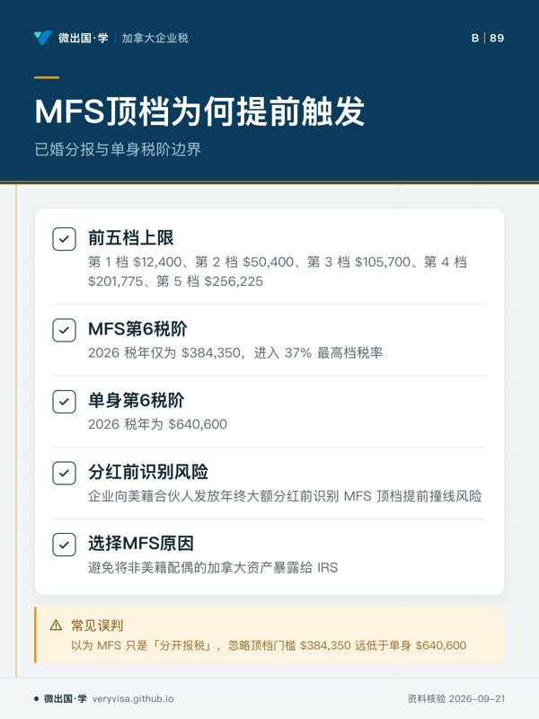
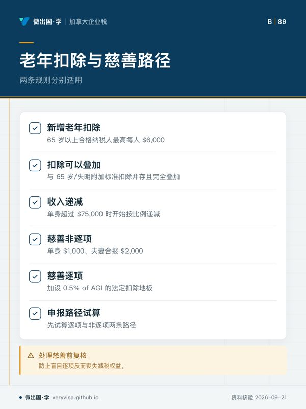

核实日期：2026-09-10｜本页适用口径：2026 税年加拿大私营企业（CCPC）与跨境运营集团在雇佣美籍高管（US Persons, 包括美国公民与绿卡持有人）、派驻管理人员赴美或美籍股东提取薪酬与股息时的美国联邦个人所得税阶映射、扣缴控制（Form W-4 / W-2）、OBBBA 最新老年与慈善扣除协同及境外金融账户（FBAR）资料归集。下一次复核：2027-01-31；IRS 或美国财政部发布新年度征管细则时提前复核。本文涉及金额除特别注明外均为美元（USD）。
在加美高度一体化的经贸走廊中，大量加拿大私营公司（CCPC）拥有美籍创始人、美籍高级技术总监或跨国流动的高层雇员。这类企业在制定管理层薪酬（Remuneration Package）时，面临着全球最为复杂的跨境双重征税体系：一方面，企业作为加拿大雇主，必须按照加拿大所得税法（ITA）执行 T4 工资代扣（CPP、EI 及省所得税）；另一方面，美籍高管受制于美国国内收入法典（IRC）的全球征税管辖权，无论其常居地在温哥华、多伦多还是蒙特利尔，每年均必须向美国国税局（IRS）提交 Form 1040 进行全球收入申报。
如果企业财会部门与跨境税务顾问不了解美国针对不同申报身份（Filing Status）所设定的法定税阶分流，甚至把美国复杂的扣除新规误当成简单的标准扣减，将导致高管个人面临双重课税断层、预扣款严重失衡，甚至使公司在境外账户反洗钱申报（FBAR）上陷入连带合规泥潭。
一、美国个人所得税六档税阶：单身（Single）、户主（HOH）与已婚分报（MFS）参数演化
美国联邦个人所得税并非统一适用一套税阶，而是严格按照纳税人的家庭申报身份进行分流。在跨国企业的高管团队中，未婚雇员、单亲抚养家庭以及配偶为非美籍（Nonresident Alien）而选择已婚分报的股东，分别对应着完全不同的税阶天花板。
根据 IRS 官方公布的 2024、2025 及 2026 税年法定参数，三大核心身份的六档税阶演化明细如下：
1. 户主身份（Head of Household, HOH）
适用于未婚且承担合格受抚养人半数以上家庭开支的高管： - 第 1 税阶：上限 2024 税年为 $16,550；2025 税年为 $17,000；2026 税年指数化至 $17,700（税率 10%）。 - 第 2 税阶：上限 2024 税年为 $63,100；2025 税年为 $64,850；2026 税年指数化至 $67,450（税率 12%）。 - 第 3 税阶：上限 2024 税年为 $100,500；2025 税年为 $103,350；2026 税年指数化至 $105,700（税率 22%）。 - 第 4 税阶：上限 2024 税年为 $191,950；2025 税年为 $197,300；2026 税年指数化至 $201,750（税率 24%）。 - 第 5 税阶：上限 2024 税年为 $243,700；2025 税年为 $250,500；2026 税年指数化至 $256,200（税率 32%）。 - 第 6 税阶：上限 2024 税年为 $609,350；2025 税年为 $626,350；2026 税年指数化至 $640,600（税率 35%）。超过此限额部分适用 37% 顶格税率。
2. 单身身份（Single）
适用于无配偶的美籍独立顾问与年轻技术高管： - 第 1 税阶：上限 2024 税年为 $11,600；2025 税年为 $11,925；2026 税年指数化为 $12,400。 - 第 2 税阶：上限 2024 税年为 $47,150；2025 税年为 $48,475；2026 税年指数化为 $50,400。 - 第 3 税阶：上限 2024 税年为 $100,525；2025 税年为 $103,350；2026 税年指数化为 $105,700。 - 第 4 税阶：上限 2024 税年为 $191,950；2025 税年为 $197,300；2026 税年指数化为 $201,775。 - 第 5 税阶：上限 2024 税年为 $243,725；2025 税年为 $250,525；2026 税年指数化为 $256,225。 - 第 6 税阶：上限 2024 税年为 $609,350；2025 税年为 $626,350；2026 税年指数化为 $640,600。
3. 已婚分报身份（Married Filing Separately, MFS）
在跨国企业中，若美籍股东的配偶为纯加拿大税务居民，为避免将非美籍配偶的加拿大资产暴露给 IRS，绝大多数美籍人士会选择 MFS 身份。然而，MFS 面临极其严苛的压缩税阶： - 前五档上限与单身完全相同：第 1 档 $12,400、第 2 档 $50,400、第 3 档 $105,700、第 4 档 $201,775、第 5 档 $256,225。 - 第 6 税阶的断崖压缩：2024 税年仅为 $365,600；2025 税年为 $375,800；2026 税年指数化后仅为 $384,350！ - 相比于单身身份的 $640,600，MFS 在年收入仅达 $384,350 时就直接被推入了 37% 的最高档税率。企业在向美籍合伙人发放年终大额分红时，必须提前识别 MFS 的顶档提前撞线风险。
二、OBBBA 税改新政：老年双重扣除与慈善两条互斥路径
在 2026 税年，美国推行了重大的税收立法调整（OBBBA 法案），重构了老年免税额与非逐项慈善捐赠机制，企业薪酬顾问与企业主必须厘清其深层法律逻辑：
- 老年额外扣除的双重叠加机制： 立法技术深刻体现了条款归属：OBBBA §70103 终止了传统人头免税额，但在 §151(d)(5)(C) 项下创设了一项针对 65 岁以上合格纳税人的全新老年扣除（最高每人 $6,000）。 实务中常犯的重大错误是将其与 IRC §63(f) 现存的 65 岁/失明附加标准扣除混淆。根据 IRS 权威说明，这两笔扣除是并存且完全叠加的！在 2026 税年，年满 65 岁的美籍单身高管可以同时享受：
- 基础标准扣除（Standard Deduction）约 $16,100；
- §63(f) 法定附加额（约 $2,000）；
-
§151(d)(5)(C) 的新增老年扣除 $6,000。 但必须严格监控收入递减（Phase-out）：依据，该 $6,000 的新增老年扣除在单身/非合报纳税人修正调整后总收入（MAGI）超过 $75,000 时开始按比例递减；在夫妻合报时从 $150,000 起递减。若属于 MFS 身份，法案未给予优惠递减门槛，高收入美籍股东无法享受此项全额减免。
-
非逐项慈善扣除与 0.5% AGI 地板的互斥分流： OBBBA 通过两条相邻条款改变了跨国高管的捐款筹划：
- §70424 将针对非逐项扣除者（Non-itemizers）的现金慈善捐赠扣除额永久化设定为 单身 $1,000 / 夫妻合报 $2,000；
- 与此同时，§70425 对逐项扣除者（Itemizers, Schedule A）加设了一道 0.5% of contribution base (AGI) 的法定扣除地板（Floor）！ 这一机制导致了反常的实务现象：假设一名美籍高管 2026 年 AGI 为 $200,000，向加拿大合资格注册慈善机构捐赠了 $800：
- 若其选择逐项扣除，其扣除地板为 $200,000 × 0.5% = $1,000，由于 $800 捐款低于 $1,000 地板，其在 Schedule A 上一分钱也不能扣除！
- 若其直接选用标准扣除，反而能通过非逐项慈善扣除在 1040 表首页全额扣除 $800（因 $800 < $1,000 允许上限）。 企业在协同高管处理年度慈善基金或公司配捐时，必须通过试算决定申报路径，防止因盲目逐项而丧失减税权益。
三、跨境时限与境外金融账户合规：延期付息与 FBAR 全年时点监控

在企业向美籍高管出具 T4、T5 及公司银行授权文件时，必须建立严密的反避税与披露防线：
-
境外居留自动两个月延期与计息红线： 常住加拿大的美籍雇员自动享有境外居民申报与缴税两个月延期（从 4 月 15 日顺延至 6 月 15 日）。但财务必须郑重告知员工：延期申报（Extension to File）绝不等于免除利息（Extension to Pay without Interest）！如果高管在 4 月 15 日之后才补缴美国联邦税款，即便其在 6 月 15 日前合规提交，IRS 仍将自 4 月 15 日常规截止日起严格计收法定欠税利息。企业若提供税务补贴，必须在 4 月 15 日前完成税额预估并结清差额。
-
境外金融账户申报（FBAR, FinCEN 114）的「全年任一时点」穿透： 在跨国公司中，美籍高管往往被授予加拿大公司的银行账户签字权（Signatory Authority），或者拥有公司的股东贷款账户。根据美国《银行保密法》，FBAR 的申报触发门槛是：在日历年内的任意一个时点（Any time during the calendar year），纳税人拥有所有权或签字权的全部境外金融账户总余额合计超过 10,000 美元！ 必须破除三大普遍误区：
- 绝非仅看 12 月 31 日年底结存，只要年中某一天总额因企业过桥资金或工资发放短暂突破 $10,000，即触发全年申报义务；
- 企业账户若由美籍高管单签或会签，高管个人必须申报该加拿大公司账户（虽不构成个人资产，但须披露签字权）；
- 故意隐瞒未报的民事罚金高达账户最高余额的 50% 或 10 万美元以上。
综上所述，管理跨国企业的美籍人才与股东，绝不仅是转换加美汇率的算术问题。精确掌握单身、户主与已婚分报在 2026 税年的六档法定边界，熟练运用 OBBBA §151 老年叠加额与 §70424 慈善路径选择，并在日常发薪与公司账户授权中严格盯防 4 月计息时点与 FBAR 全年任一时点门槛，方能构筑起跨国企业财税稳健运营的坚固屏障。
本页知识卡
不看正文也能拿到这一节的核心内容：先看导读，再看图。点图放大，左右翻页。
- 先看先看收入上限列，确认进入哪一档。
- 易漏不同家庭申报身份对应不同税阶，不能直接套用户主表。
- 下一步看讲解，带身份选择问题找持牌专业人士。

- 先看先看 MFS 第6税阶，判断顶档触发位置。
- 易漏MFS选择常涉及配偶为纯加拿大税务居民的情况，需结合资产暴露考虑。
- 下一步看讲解页，带申报身份问题找持牌专业人士。

- 先看先看两条慈善路径，判断适用方向。
- 易漏新增老年扣除有收入递减条件，MFS门槛待核。
- 下一步看知识卡，带慈善路径问题找持牌专业人士。
- 先看先看账户门槛，判断是否触发披露。
- 易漏签字权也涉及申报，企业账户不等于个人资产。
- 下一步看讲解，带账户授权问题找持牌专业人士。